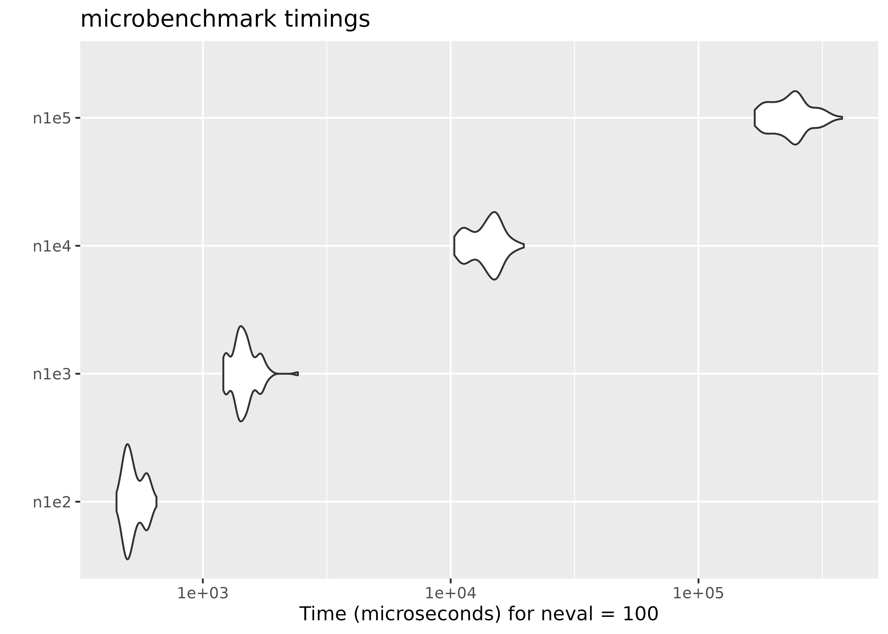
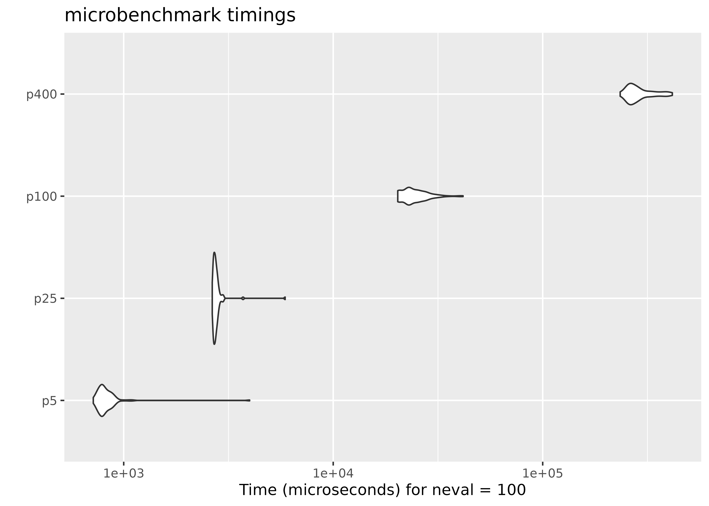

All the tests were done on an Arch Linux x86_64 machine with an Intel(R) Core(TM) i7 CPU (1.90GHz).
Empirical likelihood computation
We show the performance of computing empirical likelihood with
el_mean(). We test the computation speed with simulated
data sets in two different settings: 1) the number of observations
increases with the number of parameters fixed, and 2) the number of
parameters increases with the number of observations fixed.
Increasing the number of observations
We fix the number of parameters at
,
and simulate the parameter value and
matrices using rnorm(). In order to ensure convergence with
a large
,
we set a large threshold value using el_control().
library(ggplot2)
library(microbenchmark)
set.seed(3175775)
p <- 10
par <- rnorm(p, sd = 0.1)
ctrl <- el_control(th = 1e+10)
result <- microbenchmark(
n1e2 = el_mean(matrix(rnorm(100 * p), ncol = p), par = par, control = ctrl),
n1e3 = el_mean(matrix(rnorm(1000 * p), ncol = p), par = par, control = ctrl),
n1e4 = el_mean(matrix(rnorm(10000 * p), ncol = p), par = par, control = ctrl),
n1e5 = el_mean(matrix(rnorm(100000 * p), ncol = p), par = par, control = ctrl)
)Below are the results:
result
#> Unit: microseconds
#> expr min lq mean median uq max neval
#> n1e2 448.417 488.080 527.1484 512.396 570.284 650.063 100
#> n1e3 1209.666 1374.479 1477.1609 1452.485 1550.327 2419.623 100
#> n1e4 10345.086 11966.901 13967.3879 14233.213 15275.122 19731.053 100
#> n1e5 168587.766 203057.776 237929.4151 237147.607 254881.410 379573.806 100
#> cld
#> a
#> a
#> b
#> c
autoplot(result)
#> Warning: `aes_string()` was deprecated in ggplot2 3.0.0.
#> ℹ Please use tidy evaluation idioms with `aes()`.
#> ℹ See also `vignette("ggplot2-in-packages")` for more information.
#> ℹ The deprecated feature was likely used in the microbenchmark package.
#> Please report the issue at
#> <https://github.com/joshuaulrich/microbenchmark/issues/>.
#> This warning is displayed once per session.
#> Call `lifecycle::last_lifecycle_warnings()` to see where this warning was
#> generated.
Increasing the number of parameters
This time we fix the number of observations at , and evaluate empirical likelihood at zero vectors of different sizes.
n <- 1000
result2 <- microbenchmark(
p5 = el_mean(matrix(rnorm(n * 5), ncol = 5),
par = rep(0, 5),
control = ctrl
),
p25 = el_mean(matrix(rnorm(n * 25), ncol = 25),
par = rep(0, 25),
control = ctrl
),
p100 = el_mean(matrix(rnorm(n * 100), ncol = 100),
par = rep(0, 100),
control = ctrl
),
p400 = el_mean(matrix(rnorm(n * 400), ncol = 400),
par = rep(0, 400),
control = ctrl
)
)
result2
#> Unit: microseconds
#> expr min lq mean median uq max neval
#> p5 715.755 771.444 848.0192 801.330 856.1025 3990.853 100
#> p25 2646.376 2691.140 2788.7721 2734.485 2784.4635 5896.839 100
#> p100 20329.920 22721.281 24724.3483 23203.450 26896.9045 41680.173 100
#> p400 234344.999 258777.592 292136.9846 279937.230 314773.7035 415727.612 100
#> cld
#> a
#> a
#> b
#> c
autoplot(result2)
On average, evaluating empirical likelihood with a 100000×10 or 1000×400 matrix at a parameter value satisfying the convex hull constraint takes less than a second.